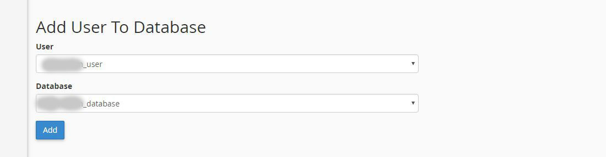
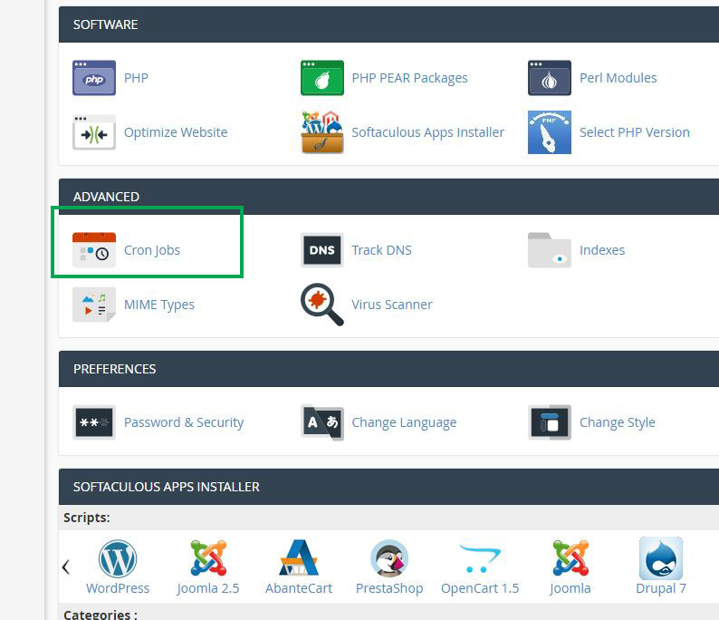
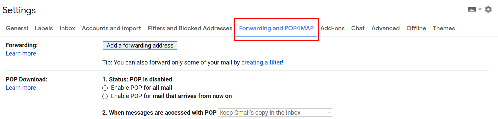

“Infinite - Blog & Magazine Script” Documentation by “Codingest” v3.8.1
“Infinite - Blog & Magazine Script”
Created: 30.04.2017
By: Codingest
Email: codingest@gmail.com
Thank you for purchasing my script. If you have any questions that are beyond the scope of this help file, please feel free to email via my user page contact form here. Thanks so much!
Table of Contents
- Introduction
- Files
- Install
- Image Upload Settings
- Quick Start
- Admin Panel
- Layout Options
- Navigation
- Pages
- Posts
- Drafts
- Categories
- Polls
- Gallery
- Comments
- Contact Messages
- Newsletter
- Ad Spaces
- Update Profile
- Users
- Cache System
- Font Options
- Seo Tools
- Email Settings
- Language Settings
- Settings
- Author Panel
- Update Guide
1) Introduction - top
Infinite is a multi-purpose blog-magazine script. It has clean, responsive and user-friendly design. You can manage your posts, custom pages, categories, user comments, advanced settings and contact messages with its powerful Admin panel. Also it has a useful ad management system. You can manage your ad spaces with this system. It is secured, seo optimized, fast and easy to use.
The technologies used:- Codeigniter
- HTML 5
- CSS 3 (Bootstrap)
- JQUERY
- AJAX
- Clean and Responsive Design
- Built Using Bootstrap
- Totally Secure System
- Multilingual System (New language can be added easily)
- RTL Support
- SEO Optimized & SEO-Friendly URL
- Multi-Author System
- Layout Options
- 10 Layout Colors
- Video Post Option
- Cache System
- Gif Support
- Follow & Unfollow Users
- Editable & Sortable Navigation
- Responsive & Sortable Slider (Enable & Disable Option)
- Responsive Ad Spaces for Any Kind of Ad Codes (Including Adsense)
- Create Ad Codes
- Adding Unlimited Fully Editable Pages
- Page Descripton, Show Page, Show Page Title, Show Breadcrumb, Show Right Column Options for Pages
- Gallery Page (Enable & Disable Option)
- Gallery Albums
- Gallery Categories
- Contact Page
- Search in Site
- Emoji Reactions
- Save as Draft Option for Posts
- Reading List Page (Add & Remove from List)
- Lazy Image Loading
- Voting Poll (Add, Delete Unlimited Poll)
- Add, Delete, Update Posts
- Add Multiple Images to a Post.
- Add, Delete, Update Categories
- Add Unlimited Categories
- Add, Delete, Update users
- Add, Delete Photos
- Add Unlimited Photos
- Add & Remove Posts from Slider
- Newsletter (Send Html Email to All Registered Emails)
- Different Email Libraries
- Dynamic Tag System
- Ajax Comment System
- Social Sharing
- Social Media Links
- Widget: Popular Posts
- Widget: Our Picks
- Widget: Categories
- Widget: Random Posts Slider
- Widget: Tags
- Widget: Related Posts
- Pageview Counts (Enable & Disable Option)
- Manage Registered Emails
- Manage Comments
- Manage Contact Messages
- Advanced Post Options
- Sitemap.xml Generator
- RSS (With different channels)
- 30 Font Options
- Rich Text Editor (Image and Video Can Be Added)
- Membership System with 3 Roles (Admin, Author, User)
- Enable & Disable Membership System
- Enable & Disable Comment System
- User Profile Page
- Secure Authentication
- Google Analytics
- Cookie Notice for GDPR
- Password Reset
- Advanced Settings Options
- Change Logo, Favicon, Site Title, Site Description, etc. from Admin Panel
- Easy Installation Using Installation Wizard
- Detailed Documentation
- Runs on PHP 5.5+ (and PHP 7.3)
Security:
Infinite is a secure system. There are various mechanisms to secure application. These mechanisms are:
- Cross-Site Request Forgery (CSRF) Prevention
- Cross-Site Scripting (XSS) Prevention
- Password Hashing
- Avoiding SQL Injection
Requirements:
There are some requirements for Infinite to work on your server. These requirements are:
- PHP >= 5.5+ (and PHP 7)
2) Files - top
a) CSS Files- AdminLTE.min.css and _all-skins.min.css: Contains general css codes for admin panel.
- bootstrap-toggle.min.css: Contains bootstrap toggle css codes.
- custom.css: Contains css fixes for admin panel.
- style.css: Contains main css codes.
- responsive.css: Contains reponsive css fixes.
-
Style.css file is separated into sections using:
/* ============ 1. General layout CSS styles ============ */
code
/* ============ 2. Header ============ */
code
/* ============ 3. Slider ============ */
code
etc, etc.
- jquery-1.12.4.min.js: Javascript library
- app.min.js: This file contains general dashboard script codes.
- bootstrap-toggle.min.js: Contains bootstrap toggle javascript codes.
- custom.js: Contains custom script codes. There are custom functions and ajax post functions
- theme.js: Contains javascript functions for front-end.
Js files are separated into sections using:
//ajax post delete image
code
//Agreement datatable function
code
etc, etc.
-
jQuery
jQuery is a Javascript library that greatly reduces the amount of code that you must write. -
jQueryUI
jQuery UI is a curated set of user interface interactions, effects, widgets, and themes built on top of the jQuery JavaScript Library. -
Ckeditor
CKEditor is a browser-based WYSIWYG content editor. -
Datatables
DataTables is a plug-in for the jQuery Javascript library. It is a highly flexible tool, based upon the foundations of progressive enhancement, and will add
advanced interaction controls to any HTML table. -
ICheck
Highly customizable checkboxes and radio buttons. -
Pace
Automatic page load progress bar. -
Tagsinput
jQuery plugin providing a Twitter Bootstrap user interface for managing tags -
Gallery
Jquery Gallery plugin -
Owl-Carousel
Responsive jquery slider plugin -
Jquery-confirm
Jquery-confirm plugin
3) Install - top
To Install Infinite:
Note: Please check your PHP version before installing. In order for Infinite to work properly, your PHP
version should be at least 5.6.
Note: cURL PHP extension should be enabled in your server. If you get this error during installation
"cURL is not available on your server! Please enable cURL to continue the installation.", you should enable cURL on your server.
You can enable it by adding "extension=php_curl.dll" line to your php.ini file. If you cannot access your php.ini file please contact with your host service.
- Go to Cpanel and Click MySQL® Databases

- Create New Database

- Add New User

- Add User To Database
 - Set User Permissions

3. You will see this page after uploading all files to your FTP. Click "Install" to proceed. If cannot see this page, you can access install page by entering this link to your browser address bar: http://yourdomain.com/install

4. Click "Get License Code" button and generate your license code (You can only get one license code with a purchase code). Then enter your license code and then click Next.
Also, if you want to test it on local server, you can generate a second license with "http://localhost" domain.
5. Check your folder permissions. If all folders are writable, click Next
6. Enter your database credentials. Then click next.
***Note: If you want to change your database credentials later, you can edit the database.php file in the application / config folder.
7. Enter your admin credentials. Then click finish.
8. Delete the install folder in the main directory.
IMPORTANT
After installation, if you get "404 Not Found" error or you can not login to your site, please check your main directory. There should be a htaccess file otherwise your script will not work. If you extract the zip file in your Cpanel, htaccess may not be copied due to security reasons. In this case you need to upload the htaccess file from script files.
4) Image Upload Settings - top
Infinite performs image optimization while uploading. This optimization consumes memory.
If you try to upload large images without doing some settings on your server, you can get an error.
If you can't upload large images, you need to set these PHP values. These are recommended minimum values.
php_value upload_max_filesize 32M
php_value post_max_size 32M
php_value memory_limit 256M
To set these values follow the steps:
- Go to your Cpanel and click "Select PHP Version"

- Then click "Switch to PHP Options"
- Then set the values "upload_max_filesize", "post_max_size" and "memory_limit" as you see in the picture.

5) Quick Start - top
✓ Changing Admin Password: After login the system you will see your username in the top menu. Go over your username and a dropdown will open then click
Settings / Change Password option. And fill in the form to change your password.
✓ Adding Category: Go to "Categories" section from navigation and click Categories. Then fill in the Add Category form and click Add Category button.
To add subcategory, Go to "Categories" section and click Subcategories. Then fill in the Add Subcategory form and click Add Subcategory button.
✓ Adding Post: To add a post you should first add a category. After adding some categories go to "Posts" section from navigation and click Add Post.
Then fill in the form and click Add Post button.
✓ Adding Page: Go to "Pages" section from navigation and click Add Page. Then fill in the form and click Add Page button. If you want to manage
existing pages: Go to "Pages" section from navigation and click Pages. Then you will see all pages in your site. You can make any change by selecting edit option for each page.
✓ Adding Images to Gallery: To add images to gallery, first you should add some categories for images. Go to "Gallery" section from navigation and click Categories. Then fill in the Add Category form and click Add Category button.
After addings some categories, go to "Gallery" section and click Images. Then fill in the Add Image form and click Add Image button.
✓ Sending Email to Registered Emails (Newsletter): To use newsletter feature you should first make your email settings.
Go to "Settings" section from navigation and click Email Settings tab. Enter your mail server informations and click Save Changes button. Then go to "Newsletter" section from navigation and fill in the
Send Email to Registered Emails form and click the Send Mail button.
✓ Running Ads: If you want to add your ad codes to your website, this is very easy in the Infinite.
Go to "Ad Spaces" section and add your ad codes then click Save Changes button.
✓ Managing Users: Go to "Users" section from navigation. You will see all users registered. You can select Change User Role, Delete User and Ban User options for each users.
✓ Adding Author: Infinite is a multi-author system, so authors can add posts. To add an author to the system first user should register from register page.
Then Admin should go to "Users" section from navigation and should set user role as Author. After this process user will became an Author and he can reach his own Panel to manage his posts.
6) Admin Panel - top
You can reach Admin panel from this link: yourdomain.com/admin
There are some counters in the Admin panel's home page. These counters:
- Posts: Shows total post count
- Pending Posts: Shows pending post count
- Drafts: Shows draft count
- Users: Shows registered user count
7) Layout Options - top
You can select a layout option from this section.
8) Navigation - top
Add Menu Link: You can add a new link to the navigation from this form. Also you can add a dropdown link to the navigation by selecting "Parent Link".
Navigation: You can see links on your navigation on this table and you can update or delete a link.
Menu Limit: You can set menu item count that will be appear on your navigation from this form.
9) Pages - top
You can add, update or delete your pages from this section.
Add Page: Go to "Pages" section from navigation and click Add Page. Then fill in the form.
- Title: Your page title.
- Slug: Slug for SEO friendly url. If your page title consists of special characters your title slug will not be generated. In this case you should add custom slug.
- Description: You can add Description (Meta Tag) for page.
- Keywords: You can add Keywords (Meta Tag) for page.
- Parent Link: You can select parent link.
- Menu Order: Your pages will order according to this value.
- Location: You can select your page link location.
- Visibility: You can hide or show your page.
- Show Only to Registered Users: If you want to show page only to registered users you should select yes.
- Show Title: You can hide or show your page title.
- Show Breadcrumb: You can hide or show your page breadcrumb.
- Show Right Column: You can hide or show sidebar on your page.
- Content: Your page content. You can add image and video with text editor.
Delete Page: On the same list you can delete pages by selecting "Delete" option for each pages.
10) Posts - top
You can add, update or delete posts from this section.
Add Post: Go to "Posts" section from navigation and click Add Post. Then fill in the form.
- Title: Your post title.
- Slug: Slug for SEO friendly url. If your page title consists of special characters your title slug will not be generated. In this case you should add custom slug.
- Keywords: You can add Keywords (Meta Tag) for post.
- Summary: You can add short description about post.
- Category: You should select a category for post.
- Subcategory: You can select a subcategory for post.
- Visibility: You can hide or show your post.
- Add to Slider: You can add post to the index slider.
- Add to Our Picks: You can add post to the our picks.
- Show Only to Registered Users: If you want to show post only to the registered users you can select this option.
- Tags: Tags for post.
- Optional Url: If you enter a url here there will be a button in your post page to access this url.
- Main Image: Image for post.
- Additional Images: If you want to add more than one image to the posts you can select multiple images from here.
- Content: Post content. You can add image and video with text editor.
Delete Post: On the same list you can delete posts by selecting "Delete" option for each posts.
Upload Image: To add image to post content click image upload button on the text editor. Then click Browse Server button.
Upload Video: To add video to post content click video upload button on the text editor. Then paste your video embed code.

If you want to change the order of posts in the slider, you can update Slider Order value of posts as you want.
11) Drafts - top
Posts can be saved as a draft instead of publishing directly. You can see your drafts in this section.
12) Categories - top
You can add, update or delete categories from this section.
Add Category: Go to "Categories" section from navigation and click Categories. Then fill in the Add Category form.
- Category Name: Category name.
- Slug : Slug for SEO friendly url. If your category name consists of special characters your slug will not be generated. In this case you should add custom slug.
- Description: You can add Description (Meta Tag) for category.
- Keywords: You can add Keywords (Meta Tag) for category.
- Menu Order: You can order categories with this value.
- Show on Menu: You can hide or show category on menu.
Delete Category: On the same list you can delete categories by selecting "Delete" option for each categories.
Subcategories: You can add, update or delete subcategories from this section.
Add Subcategory: Go to "Categories" section from navigation and click Subcategories. Then fill in the Add Subcategory form.
- Category Name: Category name.
- Category Slug : Slug for SEO friendly url. If your category name consists of special characters your slug will not be generated. In this case you should add custom slug.
- Category Description: You can add Description (Meta Tag) for category.
- Category Keywords: You can add Keywords (Meta Tag) for category.
- Parent Category: You should select a top (parent) category.
Delete Subcategory: On the same list you can delete categories by selecting "Delete" option for each categories.
13) Polls - top
Infinite has poll feature. You can add unlimited polls and you can manage these polls from this section.
Add Poll: Go to "Polls" section from navigation and click Add Poll. Then fill in the form.
- Question: Poll question.
- Options: Options for your question.
- Status: You can enabled or disabled a poll.
Delete Poll: On the same list you can delete poll by selecting "Delete" option for each polls.
14) Gallery - top
You can add or delete photos to gallery from this section.
Before adding new images you should add albums for gallery.
To add a new image, select your image from Add New Image form and then click Add Image button.
If you want to delete a image from gallery, click the Select an option button and click delete.
15) Comments - top
You can see the comments made by users from this section.
If you want to delete a comment, click the Select an option button and click delete.
16) Contact Messages - top
You can see the messages that users sent from the contact form on the site from this section.
If you want to delete a message from list, click the Select an option button and click delete.
17) Newsletter - top
The Newsletter allows you to share some updates and interesting things with the users.
You can see the all registered emails and you can send an email to these emails from this section.
18) Ad Spaces - top
If you want to run ads on the site, you can add your ad codes from this section.
Because the ad spaces are responsive, you need to enter the code at different metrics for each ad.
Also you can create your ad codes by uploading banner image and adding ad url.
Our ad spaces are responsive.
Each ad slot has 3 different sizes.
728x90 Banner: This ad slot will be shown on screens larger than 1140px.
468x60 Banner: This ad slot will be shown on screens larger than 540px and smaller than 1140px.
234x60 Banner: This ad slot will be shown on screens smaller than 540px.
19) Update Profile - top
Infinite is a multi-author system, so every author have their profile page. Admin and author can update their profiles from this section. Go to "Update Profile" section from navigation.
- Username: Your name that will be displayed.
- Name Slug: This slug will be used for accessing author profile page.
- About Me: Authors can add explanation about themselves.
- Social Accounts: Authors can add their social accounts links.
20) Users - top
You can manage registered user from this section.
Options:
- Change User Role: If you want to change user role you can use "Change User Role" option.
- Ban User: You can ban a user or remove ban for a user.
- Delete: You can delete a user by selecting delete option.
There are 3 roles in the system:
Admin: System administrator.
Author: Authors can add, update and delete their posts. Authors can
only see and process their own posts. If a post added or edited by an author, Admin approval is required.
If Admin approves, the post will be published.
User: User can't access the Admin panel and they can't add posts.
21) Cache System - top
You can enable or disable cache system from this section.
- Refresh Cache Files When Database Changes: If you select yes, the cache files will be refreshed, if there is a change in the database.
- Cache Refresh Time (Minute) : Cache files will automatically refresh after this time.
22) Font Options - top
You can change your site fonts from this section.
23) Seo Tools - top
Go to "Seo Tools" section from navigation.
- Site Title: Site title.
- Home Title: Homepage title.
- Site Description: Site description
- Keywords: Site keywords
- Google Analytics: You can add your Google Analytics code from here.
Update Your Sitemap with Cron Job
You can set a cron job to update your sitemap. Follow the steps:Step 1: Go to your Cpanel and click cron jobs.

Step 2: Add new cron job.
Select an option.

Then paste this command to command line:
wget -O /dev/null http://yourdomain.com/cron/update_sitemap
Then click Add New Cron Job button. Once you have done this, you sitemap automatically will be updated.
33) Email Settings - top
You can make your email settings from this section.
- Mail Library: Infinite has three different email libraries. You can select one of them to send emails.
- Mail Protocol: Your mail protocol (SMTP or Mail). Default SMTP. But some mail servers use Mail protocol. In this case you should set this value to Mail.
- Mail Title: Your email title
- Mail Host: Your mail server (Exp: mail.example.com)
- Mail Port: Your mail port (Default: 587)
- Mail Username: Your username (Exp: mail@example.com)
- Mail Password: Your password
1. Mail Library
If you select "Swift Mailer", you should use these settings:
Mail Protocol: SMTP
Mail Host: smtp.gmail.com
Mail Port: 587
If you select "PHP Mailer", you should use these settings:
Mail Protocol: SMTP
Mail Host: smtp.gmail.com
Mail Port: 587
If you select "CodeIgniter Mail", you should use these settings:
Mail Protocol: SMTP
Mail Host: ssl://smtp.googlemail.com
Mail Port: 465
2. You should allow less secure devices from this url: https://myaccount.google.com/lesssecureapps
3. Go to settings in your Gmail account and click "Forwarding and POP/IMAP" tab.

4. Select Enable IMAP option.

After these settings you can use Gmail to send emails.
**Some email libraries may not work on some servers. In this case you should try other email libraries.
If you want to send contact messages to your email address, you can select "Yes" for "Send Contact Messages to Email Address" option in "Email Options" form.
25) Language Settings - top
Default Language: You can change your site default language from this form.
Add Language: You can add a new language from this form.
Languages: You can see your languages on this table and you can update or delete a language. Also you can edit all translations in your language. You can access this page with "Edit Phrases" button.
26) Settings - top
Genaral Settings:
- Application Name: Your site name.
- Admin Panel Link: You can change Admin panel link from this field.
- Multilingual System: Your can enable or disable multilingual system in your site.
- Registration System: Your can enable or disable registration system in your site.
- Comment System: Your can enable or disable comment system in your site.
- Slider: Your can enable or disable slider in your site.
- Emoji Reactions: Your can enable or disable emoji reactions in your site.
- Show Post View Count: Your can show or hide post page view count.
- RSS: Your can enable or disable RSS in your site.
- Number of Posts Per Page (Pagination): Your can set post count in each page from this field.
- Post Optional Url Button Name: You can set a new name for your optional button.
- Footer About Section: About your site. This will be shown in the footer.
- Copyright: You can update copyright section from here.
You can change your site color, logo and favicon from this section.
Contact Settings:
Go to "Settings" section from navigation and click "Contact Settings" tab.
- Address: Your address
- Email Address: Your email address
- Phone Number: Your phone number
- Contact Text: You can add some text about contact.
Go to "Settings" section from navigation and click "Social Media Settings" tab.
You can add your social media accounts from this section.
Facebook Comments:
If you want to use Facebook comment plugin you should add your plugin code to this section.
How to Get This Code:
- Go to https://developers.facebook.com and click Add a new app.
- Click Settings and then click +Add platform.
- Select website and enter your site url and click save changes.
- Then go to https://developers.facebook.com/docs/plugins/comments/ and click Get Code button.
- Then copy this code and paste to Facebook Comments field.
You can add your custom HTML, CSS, JavaScript codes from this section. Your codes will be placed in head tags.
We use Google reCAPTCHA to protect website from spam and abuse. To enable this feature go to this link: https://www.google.com/recaptcha/intro/v3beta.html and get your Site Key and Secret Key. Then add your api keys from this form.
27) Author Panel - top
Infinite is a multi-author system. Every author has their own panel and they can manage their posts. If author add or update a post it will need Admin approval.
The post will not be published on the site until Admin approve it.
28) Update Guide - top
*Updating from Version 3.5 to 3.6
Fow new updates follow steps in Updates folder.
*Updating from Version 3.4 to 3.5
You need to update your database and your codes. Follow the steps:
- Update your codes in the ftp except uploads folder in the main directory. Then open database.php file in the application > config folder and enter your database credentials.
- Open your phpMyAdmin
- Click your database and then click 'SQL' from top navigation.
-
Then paste these codes and click run.
ALTER TABLE categories ADD COLUMN `slug` VARCHAR(255); ALTER TABLE categories ADD COLUMN `description` VARCHAR(500); ALTER TABLE categories ADD COLUMN `keywords` VARCHAR(500); ALTER TABLE categories ADD COLUMN `category_order` INT; ALTER TABLE pages ADD COLUMN `page_keywords` VARCHAR(500); ALTER TABLE posts ADD COLUMN `keywords` VARCHAR(500); ALTER TABLE posts ADD COLUMN `user_id` INT DEFAULT 1; ALTER TABLE posts ADD COLUMN `subcategory_id` INT; ALTER TABLE posts ADD COLUMN `is_picked` INT DEFAULT 0; ALTER TABLE settings ADD COLUMN `layout` VARCHAR(100) DEFAULT 'layout_1'; ALTER TABLE settings ADD COLUMN `application_name` VARCHAR(255) DEFAULT 'Infinite'; ALTER TABLE settings ADD COLUMN `show_rss` INT DEFAULT 1; ALTER TABLE settings ADD COLUMN `mail_protocol` VARCHAR(100); ALTER TABLE settings ADD COLUMN `tertiary_font` VARCHAR(255) DEFAULT 'verdana'; ALTER TABLE settings ADD COLUMN `facebook_comment` TEXT; ALTER TABLE settings ADD COLUMN `pagination_per_page` INT DEFAULT 6; ALTER TABLE users ADD COLUMN `slug` VARCHAR(255);
Update Notes:
-
The slug column added to the categories table. Please make sure that all of your categories have slugs. Otherwise your category page will not open. You just need to update the categories in the panel. Slug will occur automatically.
-
The user_id column added to the posts table. Please make sure that all of your posts have a user id. Otherwise your posts will not appear on your site.
-
The role of editor changed to author. If there is a user with the editor role in the database, change it to author.
-
The slug column added to the users table. Every Admin and Author should have slug. To generate it automatically go to Update Profile section and create your slug.
-
In this version default pages should be added to "pages" table. Your pages table should be like this:
*Updating from Version 3.3 to 3.4
You need to add two more columns to your database. Follow the steps:
- Update your codes in the ftp except uploads folder in the main directory. And enter your database informations to the database.php file in the application > config folder.
- Open your phpmyadmin
- Click your database and then click 'SQL' from top navigation.
-
Then paste these codes and click run.
ALTER TABLE settings ADD COLUMN `primary_font` VARCHAR(255) DEFAULT 'montserrat'; ALTER TABLE settings ADD COLUMN `secondary_font` VARCHAR(255) DEFAULT 'verdana'; ALTER TABLE posts ADD COLUMN `visibility` INT DEFAULT 1; ALTER TABLE pages ADD COLUMN `location` VARCHAR(255) DEFAULT 'header';
*Updating from Version 3.2 to 3.3
***Note: The database didn't changed in this version.
- Update your codes in the ftp except uploads folder in the main directory. And enter your database informations to the database.php file in the application > config folder.
*Updating from Version 3.1 to 3.2
You need to add two more columns to your database. Follow the steps:
- Update your codes in the ftp except uploads folder in the main directory. And enter your database informations to the database.php file in the application > config folder.
- Open your phpmyadmin
- Click your database and then click 'SQL' from top navigation.
-
Then paste these codes and click run.
ALTER TABLE pages ADD COLUMN `need_auth` INT DEFAULT 0; ALTER TABLE posts ADD COLUMN `need_auth` INT DEFAULT 0;
Once again, thank you for purchasing this script. As I said at the beginning, I'd be glad to help you if you have any questions relating to this script. No guarantees, but I'll do my best to assist.
Codingest